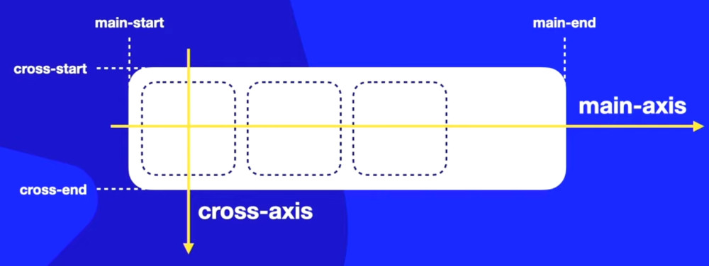
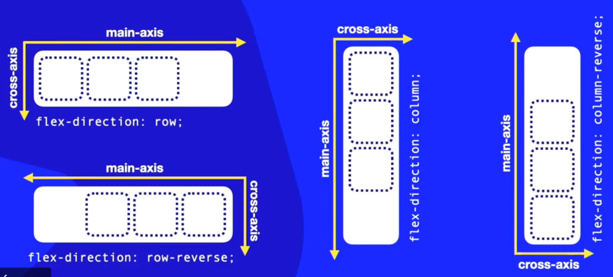

De forma automática já vem configurado em coluna, da esquerda para a direita.
flex-direction: row;
Existe também a configuração em coluna, que já vem confgurado de cima para baixo a disposição dos itens:
flex-direction: column;
Podemos aplicar o modo reverso com:
flex-direction: row-reverse
flex-direction: column-reverse;
É importante conhecer os eixos principais e como eles irão se dispor dependendo das confirações das imagens na tela
 